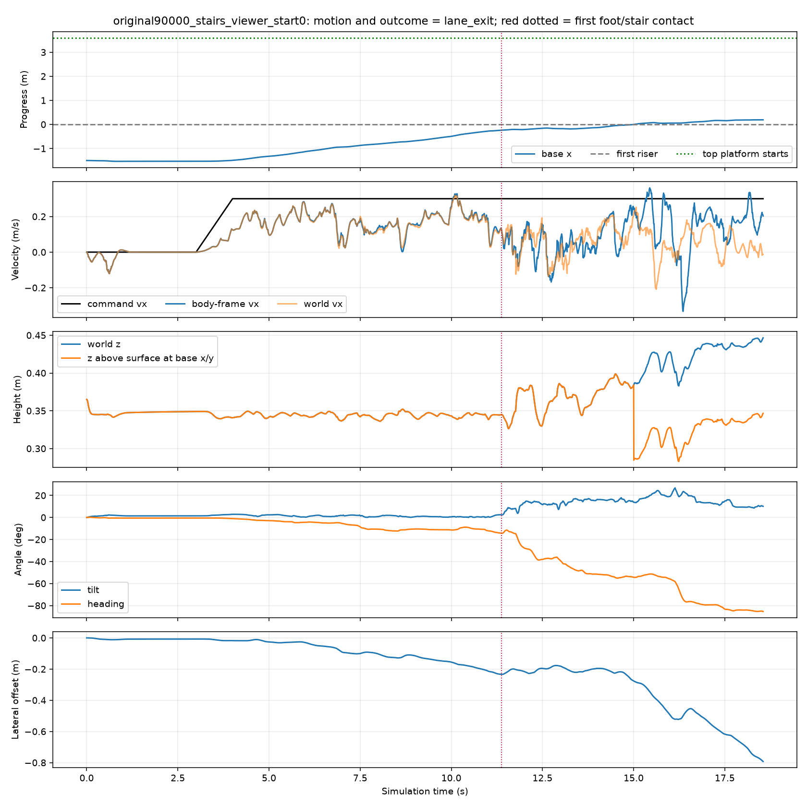
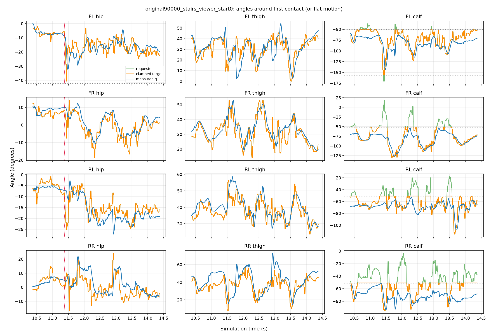
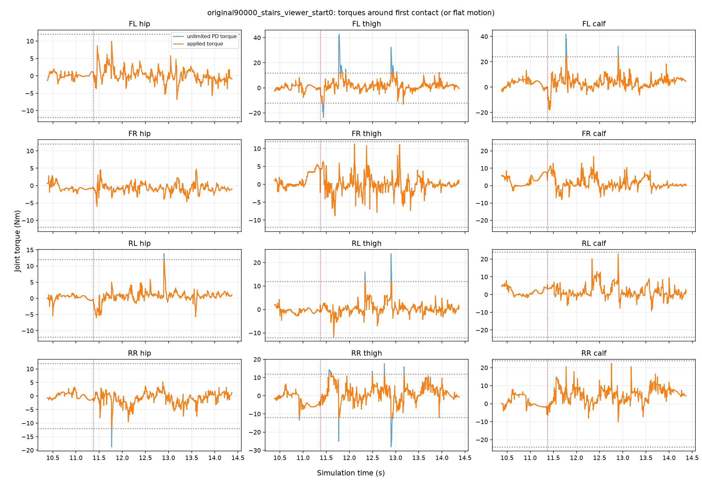
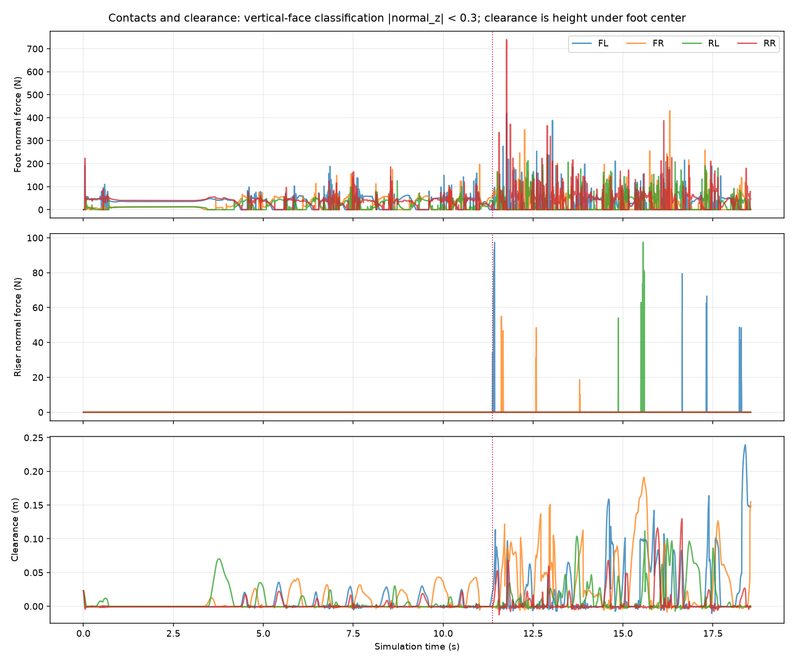
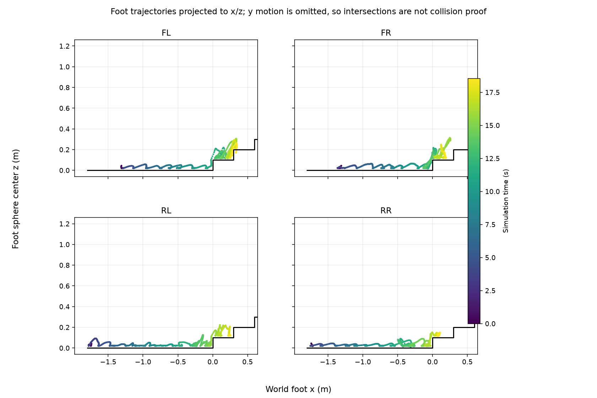
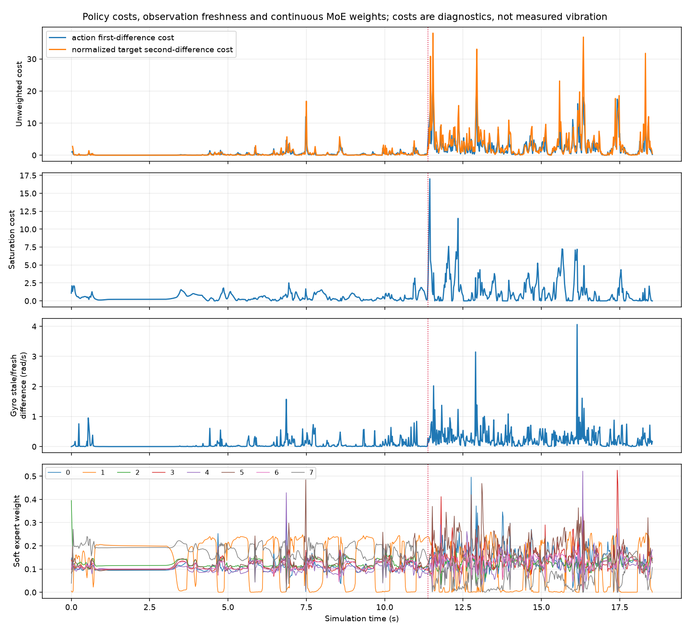
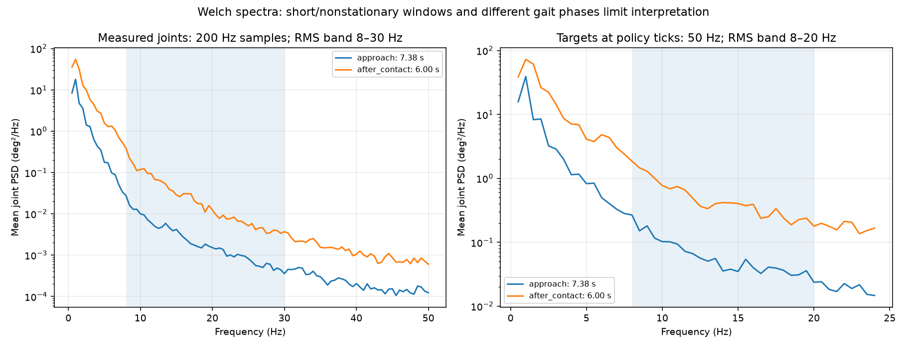
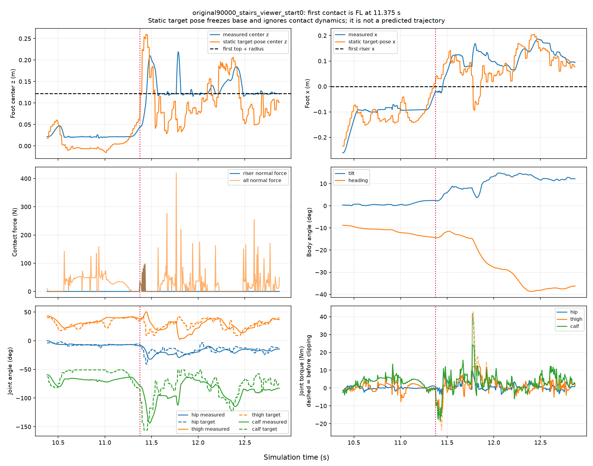
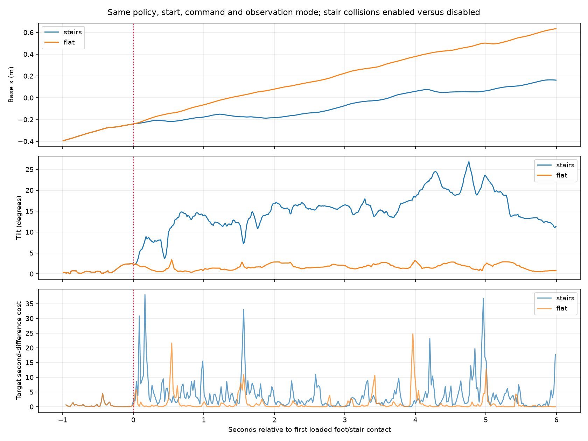

original90000_stairs_viewer_start0
Outcome: lane_exit. Model update 90000; viewer observations; stairs.
Provenance · Metrics · Numeric trace · Contact events
This page shows a fresh scripted simulation. The outcome and reading guide above explain whether a task failure occurred.
original90000_stairs_viewer_start0: motion and outcome = lane_exit; red dotted = first foot/stair contact

original90000_stairs_viewer_start0: angles around first contact (or flat motion)

original90000_stairs_viewer_start0: torques around first contact (or flat motion)

Contacts and clearance: vertical-face classification |normal_z| < 0.3; clearance is height under foot center

Foot trajectories: geometric evidence, not a collision test

Policy costs, observation freshness and continuous MoE weights; costs are diagnostics, not measured vibration

Welch spectra: short/nonstationary windows and different gait phases limit interpretation

First contact: geometry, targets, force and body response
Event data and static-pose limitations

Controlled terrain comparison
